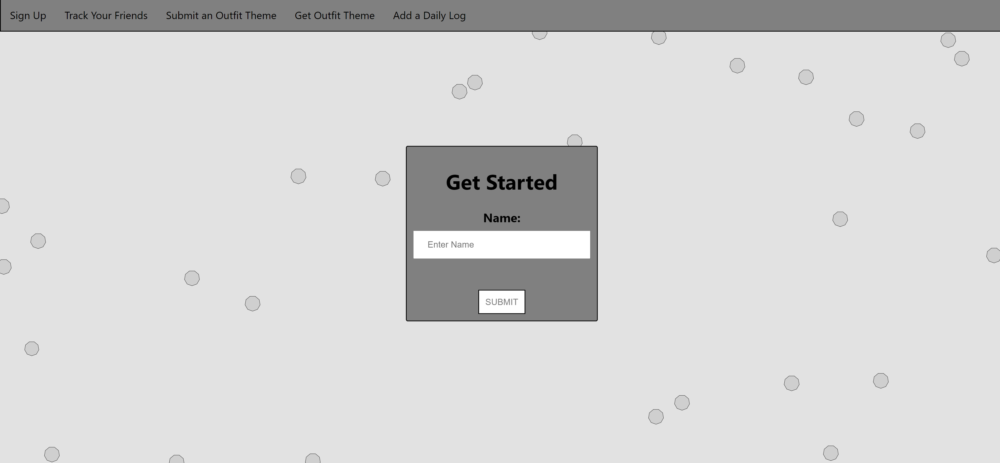

Rebecca Foster—a fullstack web developer
About Me
I am a creative and analytical thinker who loves
patterns, art, figuring out how things work, and finding solutions
to problems. I love web development because it puts all of these
activities into practice and allows me the opportunity to work on teams
with creative thinkers. Currently, I have skills in
- HTML and CSS
- SQL
- JavaScript
- JQuery
- Git and Github
- Github
- React.js
- Node.js
- Knex
- Postgres
- Express
- API Development and Integration
When I Am Not Coding
I have a background in art and social work and a passion for logic, math, and patterns.
I'm lucky enough to be based in Minneapolis, Minnesota. I am looking forward to finding a position in web development that fosters a growth mindset and working with other developers.
When I am not coding, you can find me handweaving on my 8-shaft Kessenech floor loom (Fun fact:The first computer programs were inspired by looms!), dreaming up my next adventure to a remote corner of the world, or laughing with good friends.

The Get Dressed Club
The Get Dressed Club a self care fullstack CRUD app for friends to take care of themselves and eachother during quarantine.
Users can get outfit themes for the day, submit daily logs of their self care routine, and offer or ask for support if they are struggling.
This app is targeted towards people that are in quarantine and want to feel closer to their friends.
Built with React.js, Node, Postgres, Knex, & Formik. The app is designed to be reminisent of early 2000s internet to give users a nostalgic feel and remind them of when we were kids and did not have such big worries.

Live
Repo
What should I wear on my hike?
An app to give users quick, dynamic, simple gear recomendations about the weather based off the location they
want to hike. It runs by using a fetch block to the Open Weather API. It is aimed to for users that want quick, simple and time sensitive information about the weather for their hike.
.png)
Live
Repo
Web Weavers Studio
Web Weavers Studio is a fullstack CRUD app that provides users with the opportunity to create and maintain a list of weaving projects. Users can track data on their personal projects along with seeing data on other's projects.
Handweaving is a craft that has been passed down by women and men in in person studios and homes for generations. As the people start aging out of the craft, the app intends tor replace some of the in person knowledge sharing by providing users with quick data on projects. Additionally, keeping track of data on personal projects can be daunting as well, so having one place to log projects will simplify notetaking.

Live
Repo